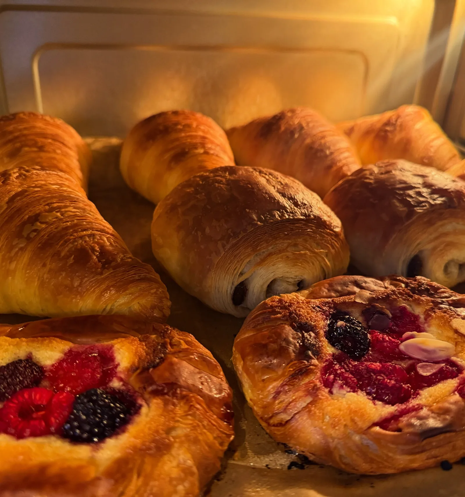
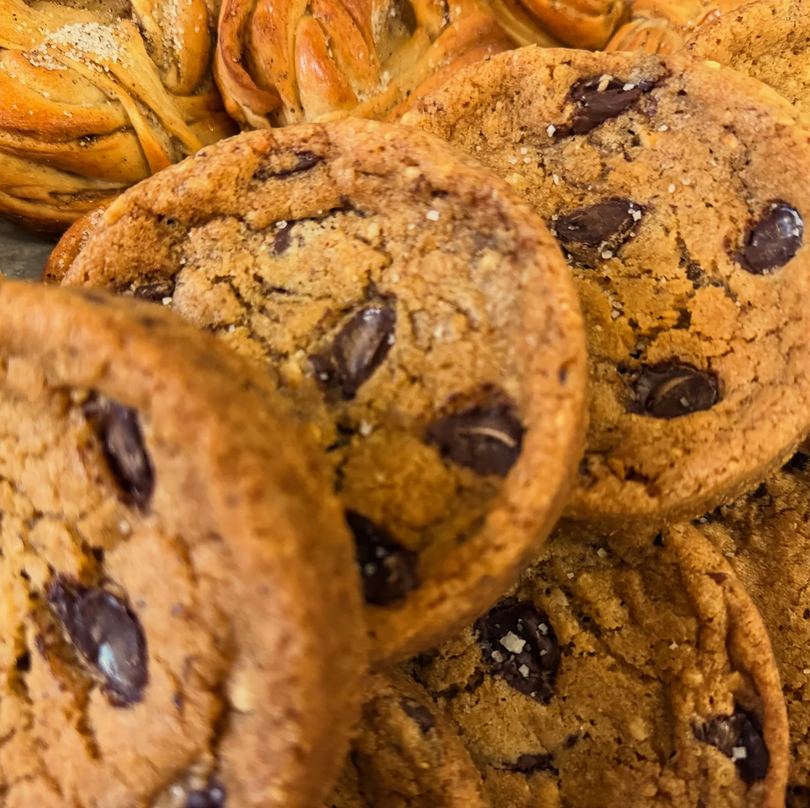
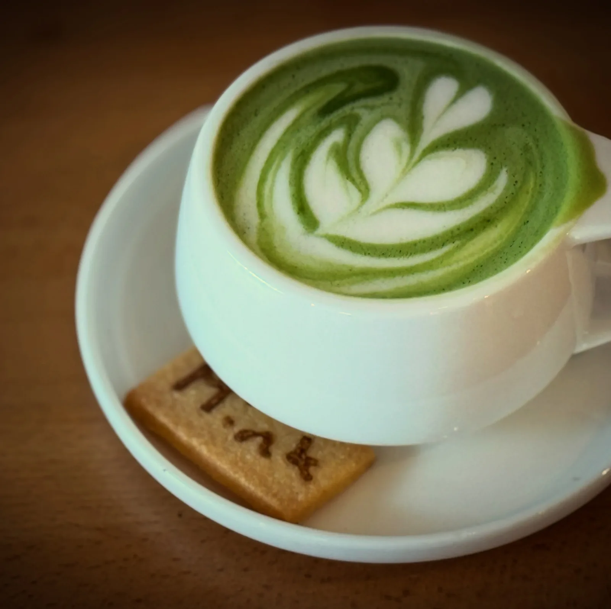
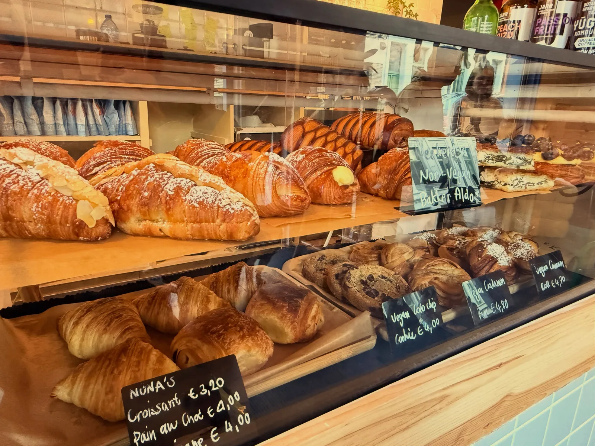
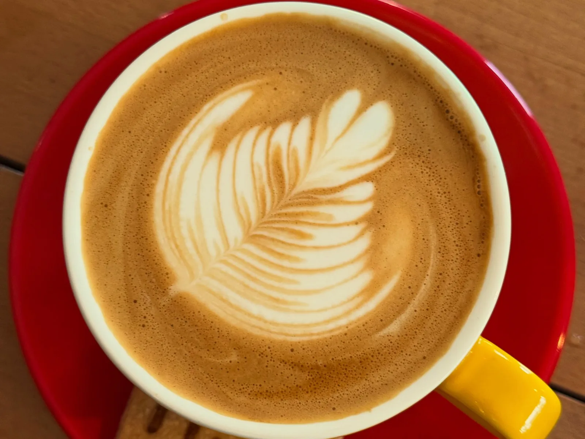
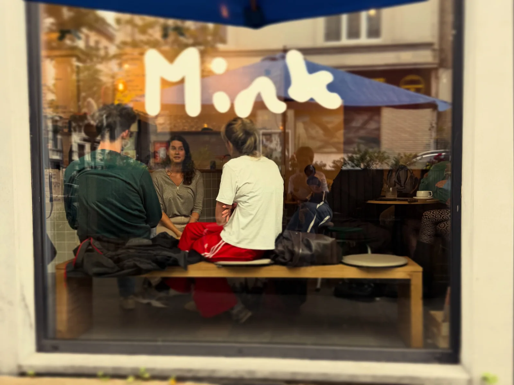
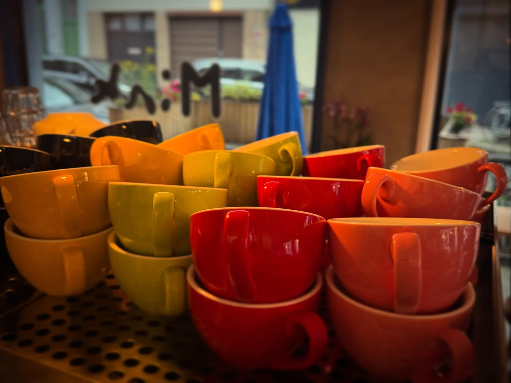
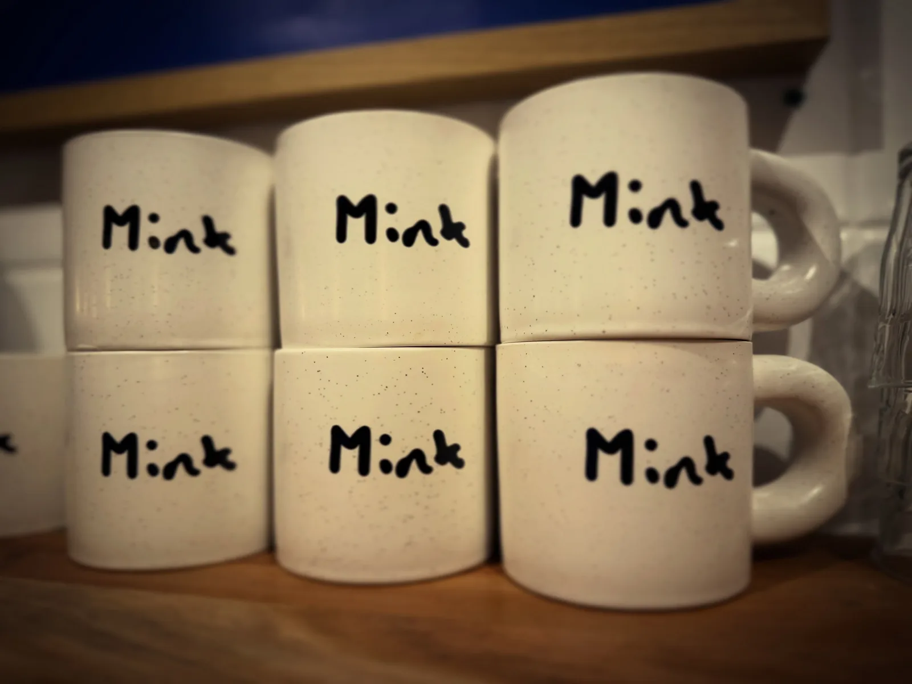
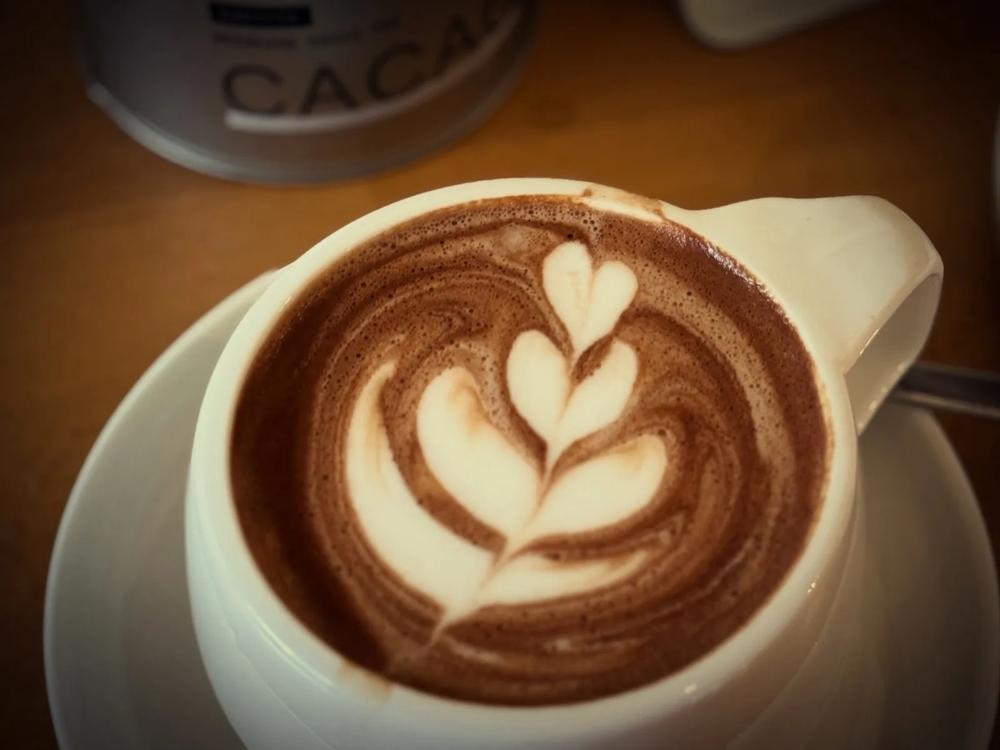

Zelfgebakken, en niet te zoet.
From the first cup to the last pastry, made with love and a little madness. De buns, de cookies en het gebak in de toonbank bakken we zelf.





Onze pumpkin spice-siroop was in één week op.
De siroop voor onze pumpkin spice latte maken we zelf. De eerste batch was tot de laatste druppel weg, dus stond er meteen een nieuwe op het vuur.
"Pumpkin spice season must go on!!!"Uit onze Instagram, na een uitverkochte week



Een gezellige tent, met een hoekje voor de kids.
Gekleurde kopjes, mokken met ons eigen handschrift en een raam waar MINK op geschilderd staat. Je komt hier voor de koffie, en je blijft voor een praatje aan de toog.
Kom je met de kinderen? Er is een klein speelhoekje met aparte speeldoosjes, zodat jij in alle rust je koffie kan drinken. Of toch bijna.
See you all at MINK for good coffee, our usual freshly baked pastries and a barista who could really use a day off from her main job.De eigenares, die naast MINK ook mama en voltijds chauffeur is
"Koffie was een echte 6 op 5!"
Daarnaast ook nog eens een enorm vriendelijke barista achter de toog. Absolute aanrader! Greg R
op Google
Hele lekkere koffie, fijne eigenaresse, prettige sfeer. Zeker een aanrader, zo'n leuke gemoedelijke tent.Rikki Alphenaar
Leuke plek voor koffie. Heerlijke zelfgebakken gebak. Niet te zoet! Met een klein speelhoekje en aparte speeldoosjes voor kinderen.Stijn Vander Stichele
Interessante drankjes met lekkere gebakjes. Iets simpel, met dat tikkeltje extra.Xuân-An Bui
Knusse sfeer, lieve eigenaresse en heerlijke koffie!Louise Lefèvre
Dinsdag tot zaterdag.
- Dinsdag8.30 tot 16 uur
- Woensdag en donderdag9 tot 16 uur
- Vrijdag en zaterdag9 tot 17 uur
- Zondag en maandaggesloten

Kleine Beer Straat 20, Antwerpen.
Gewoon binnenlopen en aanschuiven. Een vraag? Stuur ons een berichtje op Instagram.